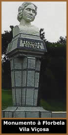

Mais do que em outras gerações do
romantismo, o ultra-romantismo se destacou através do sentimentalismo
excessivo e sombrio. Além disso, vários de seus
autores tiveram a existência marcada pelo sofrimento, e
um reconhecimento literário póstumo.
O autor Cruz
e Sousa teve o casamento atormentado pelos distúrbios
mentais de sua esposa, e a morte de seus quatro filhos vitimados
pela tuberculose pulmonar. Edgar
Allan Poe viveu na miséria por muito tempo. O escritor
e religioso Junqueira
Freire morreu, prematuramente, aos 23 anos. Casimiro
de Abreu morreu enfraquecido pela tuberculose em 1860, três
meses antes de completar 22 anos.
Assim também foi a trajetória do
mais famoso ultra-romântico brasileiro: Álvares
de Azevedo. O paulista viveu e escreveu sob a tétrica
fluência Byroniana, falecendo precocemente no dia 25 de
Abril de 1852, antes de completar 21 anos. Enquanto seu corpo
era sepultado, o amigo Joaquim Manuel de Macedo recitava "Se
Eu Morresse Amanhã"; obra escrita por Álvares
de Azevedo poucos dias antes. Mas o poeta teria pressentido sua
morte?
O inglês Lord
Byron morreu aos 36 anos, mas sua poesia é vasta, pontuada
nos temas fúnebres e sobrenaturais. Em sua inacabada obra
Don Juan, escreveu: "Sobre o tálamo nupcial, dizem
os rumores/ Na noite das bodas de leve esvoaça/ Mas ao
leito de morte de seus senhores/ Não falha - para gozar
a desgraça..." Esta é uma alusão
ao fantasma do Frade Negro. Há uma lenda, que esta aparição
invadia a mansão da Família Byron regozijando-se
nas tragédias; por outro lado, apresentava-se com feições
pesarosas nas ocasiões felizes. Mas este fantasma teria
atormentado e, de certa forma, inspirado Lord Byron?
O
conceito do suicídio também está presente,
mas algumas vezes, esta idéia foi além dos
versos e alcançou a vida dos autores. Abalado com
o falecimento de seu avô, Lovecraft
tentou se matar aos 14 anos, atirando-se de bicicleta no
rio Barrington. A biografia da poetisa Florbela
Espanca nos traz um exemplo fatal: após casamentos
infelizes, rejeição da família e da
sociedade e dois abortos, Florbela suicidou-se aos 36, anos
ingerindo uma dose excessiva de medicamentos.
As tragédias pessoais também alimentam
a inspiração ultra-romântica. Fagundes
Varela escreveu Cântico do Calvário,
uma homenagem ao seu filho morto com apenas três meses de
vida. Ainda sofreu a perda de outro filho em seu segundo matrimônio,
e faleceu aos 34 anos em absoluto desequilíbrio mental.
Ainda neste contexto, podemos citar novamente Florbela
Espanca. A poetisa portuguesa é autora de As Máscaras
do Destino; dedicada ao seu irmão que também
cometeu suicídio. Alphonsus
de Guimaraens perdeu sua noiva Constança, vítima
de tuberculose aos 17 anos. Mesmo casando-se posteriormente, toda
sua vida e obra foram marcadas por esta ausência.
Portanto, a saúde frágil e muitas
vezes debilitada pela incurável tuberculose (segundo o
inglês Shelley: "a doença da moda"),
decepções afetivas, fracassos financeiros e a perda
de entes queridos formaram um quadro dramático comum aos
poetas, que parece ter contribuído intensamente na inspiração
e refletido nos temas soturnos do estilo. Assim, a alma dos ultra-românticos
manifestava o tédio, melancolia e desilusão em que
viviam imersos.
Mas seriam os poetas "tristes de nascença"?
Ou tornavam-se "poetas tristes" em decorrência
de uma vida repleta de sofrimento?
Por Spectrum